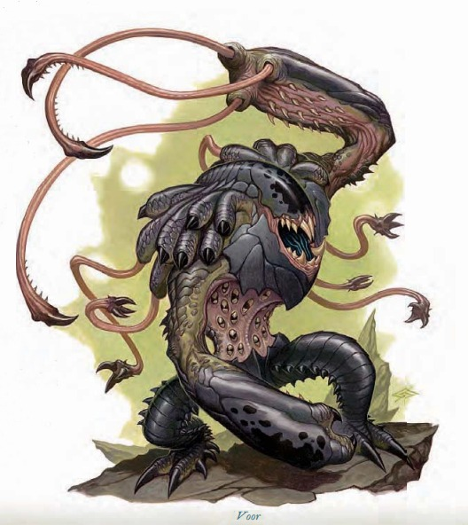

大型异界生物（邪恶, 跨位面, 尤格罗斯魔） | 挑战级数 4这个笨重的生物用短粗的腿摇摇晃晃地向你走来。它巨大的手臂以致命的爪子为末端，装甲般的脸上没有眼睛，从手臂和背部不断射出的绳状触须令人毛骨悚然。
沃尔 ―― 始终中立邪恶。
| 生命骰 | 5d8+15（37HP），DR5/善良 |
| 先攻 | +2 |
| 速度 | 30 英尺 (6格)，攀爬 20 英尺 |
| 防御等级 | 17，接触 11，措手不及 15（-1体型，+2敏捷，+6天生） |
| 基本攻击/擒抱 | +5 / +19 |
| 近战攻击 | 4条穿刺触须，每条 +10 (1d6+6)，以及 2爪击，每只 +8 (1d6+3) |
| 占据/触及 | 10 英尺 / 10 英尺 (触须 20 英尺) |
| 特殊攻击 | 战斗反射，阵营攻击 (邪恶)，撕裂 2d6+9 |
| 特殊能力 | 目盲与盲感 120 英尺；免疫：酸、火焰、凝视攻击、幻术、毒素、视觉效果；抗力：寒冷10，闪电10；SR15；无味体 |
| 豁免 | 强韧 +7，反射 +6，意志 +3 |
| 属性 | 力量 22，敏捷 15，体质 17，智力 5，感知 8，魅力 7 |
| 技能 | 攀爬+22，交涉+0，聆听+11，潜行+10，察言观色+7，生存+7 |
| 专长 | 战斗反射，多重攻击 |
| 语言 | 深渊语 、炼狱语；心灵感应 100 英尺 |
| 进化 | 6-10HD (大型)；11-30HD (超大型)；31+HD (巨型) |
撕裂 (Rend, Ex)：当沃尔用两次爪击都命中同一目标时，它会抓住目标的身体并撕裂其肉体，自动额外造成 2d6+9 点伤害。
无味体 (Scentless, Ex)：沃尔不会散发自然气味，因此通常无法通过嗅觉发现。然而，如果它在过去一小时内战斗过，则会散发出敌人血液的气味，但只能在正常嗅觉范围的一半距离内被检测到。
技能：一个沃尔在攀爬上有 +8 种族加值，并且始终可以在攀爬检定上取 10，无论匆忙还是受到威胁。其也在聆听和擒抱检定上获得 +4 种族加值。
一个巨大的恶魔挥舞着凶狠的触须，疯狂撕裂你的防御。它那没有眼睛的圆顶头颅中，尖锐的牙齿在不断地咬合，散发出恐怖的气息。
恐怖鞭击者 ―― 始终中立邪恶。
| 生命骰 | 15d8+75（142HP），DR10/善良 |
| 先攻 | +5 |
| 速度 | 30 英尺 (6格)，攀爬 20 英尺 |
| 防御等级 | 20，接触 9，措手不及 19（-2体型，+1敏捷，+11天生） |
| 基本攻击/擒抱 | +15 / +38 |
| 近战攻击 | 4条穿刺触须，每条 +24 (1d8+11) 和 2只爪击，每只 +23 (1d8+5) |
| 占据/触及 | 15 英尺 / 15 英尺 |
| 特殊攻击 | 战斗反射，阵营攻击 (邪恶)，撕裂 2d8+16 |
| 特殊能力 | 目盲，盲感 120 英尺；免疫：酸、火焰、凝视攻击、幻术、毒素、视觉效果；抗力：寒冷10，闪电10；SR20；无味体 |
| 豁免 | 强韧 +14，反射 +10，意志 +8 |
| 属性 | 力量 32，敏捷 13，体质 21，智力 5，感知 8，魅力 7 |
| 技能 | 攀爬 +37，交涉+0，聆听+21，潜行+19，察言观色+17，生存+17 |
| 专长 | 战斗反射，精通先攻，强化天生护甲 (2)，多重攻击，武器专攻 (爪击) |
| 语言 | 深渊语 、炼狱语；心灵感应 100 英尺 |
| 进化 | 16-30HD (超大型)；31HD以上 (巨型) |
撕裂 (Rend, Ex)：当恐怖鞭击者用两次爪击都命中同一目标时，它会撕裂目标的身体，自动造成额外 2d8+16 点伤害。
无味体 (Ex)：同上文沃尔。
恐怖鞭击者是一种经过特别培育的巨型沃尔，专门用于守卫尤格罗斯魔将领的堡垒。这种生物可能在某个地点守卫数千年，靠入侵者的血肉不断壮大自己的体型。
沃尔生物最擅长守卫任务，耐心等待敌人靠近。它们的盲感常常能在敌人发现它们之前就锁定目标。如果有可能，它们会攀爬到墙壁或其他高处，从远距离利用触须发动攻击。
行为特性：单独行动的沃尔通常会逐个攻击目标，但也可能直接冲入人群，以爪击锁定看似较弱的敌人，同时用触须压制其他目标。在成群行动时，沃尔会一起扑向猎物，占据重叠的空间，以最大化其威胁范围。
作为守护者，沃尔对意图的感知极其敏锐，很难用违背它们原始命令的指令来欺骗它们。然而，沃尔的智慧有限，无法理解命令的隐含含义，它们会严格按照字面意思执行指令。
典型遭遇：沃尔最常被用来守卫恶魔圣地或其他重要地点。有时，一两只沃尔可能会被指派为牧师或其他权威人物的贴身保镖。
单独守卫 (EL 4)：一只沃尔守护着一座邪恶的神殿、一批魔法物品，或通往其他领域的传送门。
保镖 (EL 7)：两只沃尔被指派保护一位"上古元素之眼"（见第7页）的牧师（中立邪恶人类牧师5级）。牧师会战斗到其生命值减半时企图投降，这时沃尔会立刻攻击牧师，认为其背叛了信任。
生态：沃尔以血肉为食，尤其喜爱鲜血。它们对所在地区的影响通常是一场屠杀与残暴的狂潮。
沃尔会定期产下后代。幼年沃尔需要五年才能成长为成熟形态并准备执行任务。它们会待在"母体"沃尔附近，观察并学习守卫位置与捕捉猎物的最佳技巧。
环境：沃尔来自于永恒荒凉之焦炎地狱 (Gehenna)，尤其是炽热的深红山 (Khalas)。由于靠近九层地狱，它们通常被魔鬼雇佣，但其他实体也可能召唤它们。沃尔偏好地下区域或拥有高地形的地点，如墙壁或岩石突起，便于攀爬和伏击敌人。它们对火焰和熔岩地形情有独钟，这些场景让它们想起自己的家园。
典型的身体特征：沃尔的外形大致为类人形，但仅限于轮廓的相似。它们身高约 9 英尺，体重约 800 磅。身体覆盖着厚重的装甲，并布满细小的裂口，用于撕裂敌人和吸取鲜血。沃尔的脸部是一个无眼的甲壳和骨骼圆顶，末端是一张布满尖牙的恐怖大嘴。
沃尔粗壮的手臂末端是锋利的爪子，每只手臂都配有触须，可以迅速伸缩。这些触须不是用来擒抱的，而是通过尖锐的末端刺穿目标。此外，肩部还有额外的触须，用于固定敌人，或偶尔搬运某些物体。
阵营与性格：沃尔反复无常且残忍，只忠于它们的主人。它们始终为中立邪恶 (NE)。
社会结构：沃尔主要作为守卫者、保镖以及强大邪魔的执行者使用。它们强壮而危险，但却极其愚钝，能够毫无疑问地接受比自己强大的邪魔的命令。沃尔的耐心堪称惊人：它们可以连续数周静止不动地守卫某个区域，只为等待机会来发动破坏和屠杀。
沃尔只能理解相对简单的命令，例如"守卫此地"或"只允许说'奥库斯' (Orcus) 的人类通过"。更复杂的指令对它们来说完全无法理解。尽管比大多数恶魔更顺从，沃尔仍然喜欢欺凌比自己弱小的生物，或许是为了满足其血腥的嗜好。如果没有特别的指令，它们会主动攻击并摧毁任何胆敢闯入其守护区域的弱小邪魔，并将尸体摆放在显眼的地方，以此作为警告。
典型财宝：沃尔的财宝通常与其挑战等级匹配，基本版本的价值约为 1,200 金币。由于沃尔对财富并不关心，这些财宝往往来自于那些不幸被其伏击的受害者遗留的装备。
玩家角色的使用：一个典型的沃尔可以通过次级异界盟约 (lesser planar ally) 召唤。更强大的沃尔则需要 异界盟约 (planar ally) 或高等异界盟约 (greater planar ally)。沃尔还可以通过召唤怪物 IV (summon monster IV) 或更高等级的召唤怪物召唤。根据《玩家手册》(PH 287) 的召唤怪物表，将沃尔视为第四等级召唤列表中的生物。
角色拥有 位面知识 (Knowledge [the Planes]) 技能时，可以通过成功的技能检定了解更多关于沃尔的信息。以下是检定成功时可获得的相关信息（包括较低难度的内容）：
DC 14：这种生物是沃尔，一种被称为"鞭击者" (lasher) 的尤格罗斯魔。此结果揭示了所有异界生物和尤格罗斯魔的特性。
DC 19：沃尔没有视觉，并且对火焰和毒素免疫。它们以大量挥动的触须和撕裂攻击进行战斗。
DC 24：沃尔并不特别聪明，通常被用作神殿或其他重要地点的守卫者。